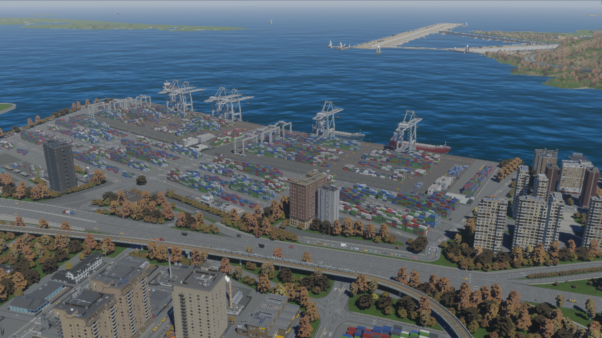
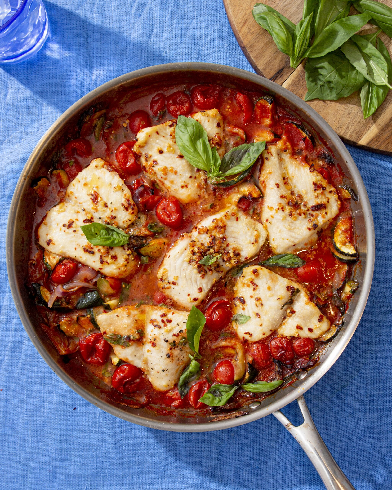
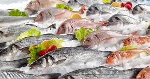
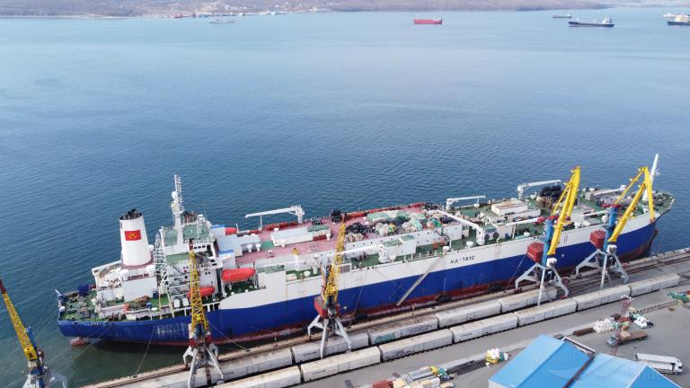
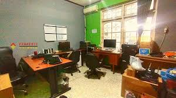
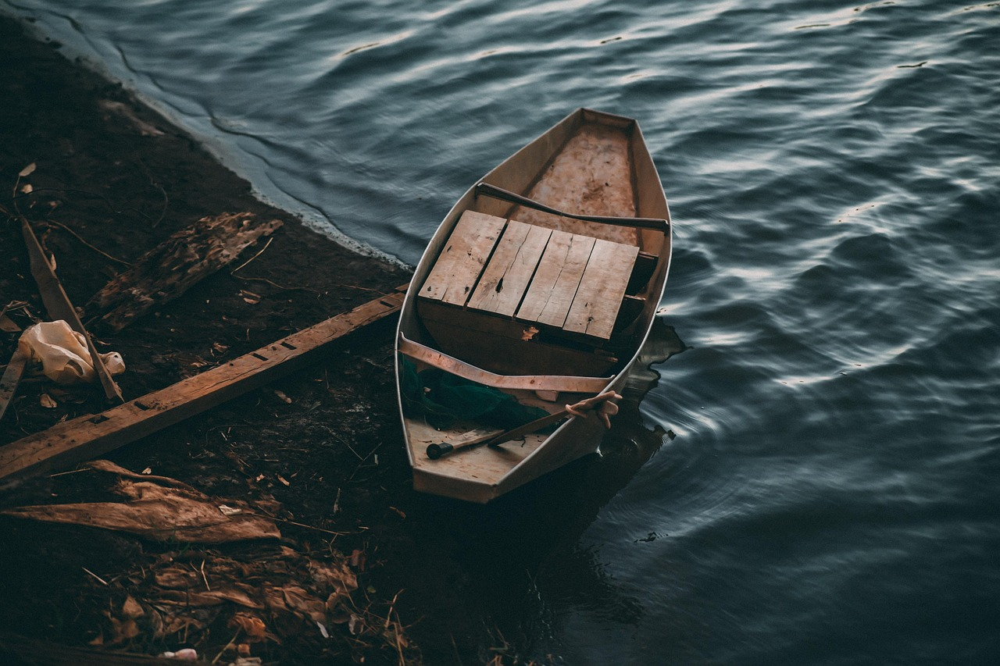
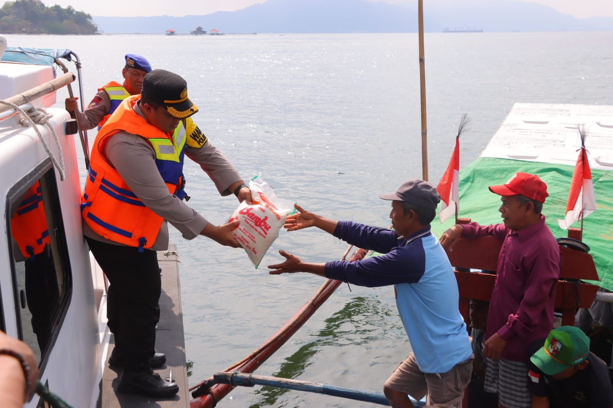

Kami percaya bahwa makanan laut yang bergizi dan berkualitas tinggi seharusnya bukan barang mewah, tetapi makanan pokok yang tersedia bagi semua orang — terlepas dari geografi, pendapatan, atau latar belakang. Dengan memanfaatkan praktik penangkapan ikan yang berkelanjutan, solusi rantai pasokan yang inovatif, dan kemitraan strategis, kami bertujuan untuk mengurangi hambatan dalam distribusi, menurunkan biaya, dan mendukung masyarakat setempat. Komitmen kami adalah untuk memastikan bahwa setiap keluarga dapat menikmati manfaat kesehatan dari ikan, sekaligus melindungi ekosistem laut untuk generasi mendatang.

Beroperasi di perairan Indonesia, Japan, China and Malaysia

Nelayan yang sudah bergabung dengan kami

Pedagang yang terdaftar dengan kami di ekosistem Berpteam
Pada tahun ini, Berpfish menjalin kemitraan strategis dengan Toko Ipsum, e-commerce internasional dengan jangkauan luas di Asia dan Eropa. Melalui kerja sama ini, produk Berpfish mulai dipasarkan secara daring dengan dukungan sistem logistik terintegrasi dan pelacakan mutu real-time. Dalam dua tahun pertama, penjualan online meningkat 187% dan distribusi meluas ke lebih dari 12 negara. Pelanggan juga menikmati manfaat seperti garansi kesegaran, pengiriman ekspres, serta akses eksklusif ke produk premium.
“Kerja sama ini bukan hanya distribusi—ini tentang menghadirkan pengalaman berkelas dunia,”
— Kevin Ferguson, CEO Berpfish
Kemitraan ini menjadi fondasi penting dalam transformasi digital perusahaan dan terus berkembang melalui inovasi bersama, termasuk integrasi AI untuk manajemen stok dan prediksi pasar.